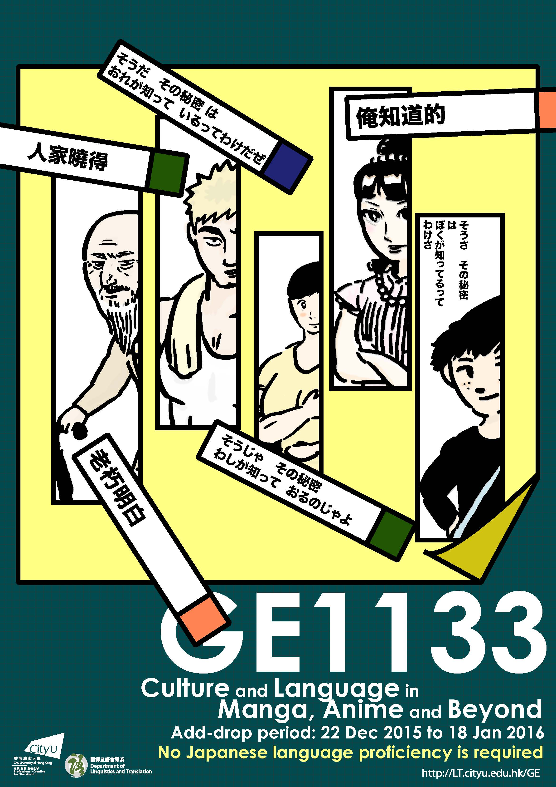
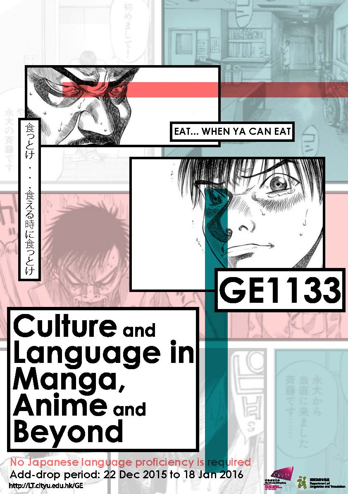

See
the pdf version
for my latest CV.
Yurie Hara

- Formal Semantics/Pragmatics (Particles, Questions, Implicatures, Presupposition, Evidentiality, Modality, Topic and Focus, Speech Acts), Information Structure
- Japanese Phonology, Semantics-Phonology Interfaces, Syntax
- Field Linguistics
| Professor | Research Faculty of Media and Communication, Hokkaido University, April 2024-present |
| Associate Professor | Research Faculty of Media and Communication, Hokkaido University, September 2019-March 2024 |
| Guest Associate Professor | School of Creative Science and Engineering, Waseda University, April 2018-August 2019 |
| Lecturer | taught 語用論(Pragmatics) at 日本言語学会夏期講座(The Linguistic Society of Japan Summer School) at Tokyo University of Foreign Studies, August 20-25, 2018 |
| Part-time Lecturer | Hokusei Gakuen University, April 2018, April-August 2019 |
| Part-time Lecturer | Hokkaido University, October 2017-August 2019 |
| Visiting Researcher | School of Creative Science and Engineering, Waseda University, January 2017-March 2018 |
| Assistant Professor | Department of Linguistics and Translation, City University of Hong Kong, April 2009-January 2017 |
| Postdoc | University of Kyoto. Japan Society for the Promotion of Science (JSPS) Research Fellowship for Young Scientists. (The Ministry of Education, Science, Sports and Culture), April 2006-March 2009 |
| Visiting Scholar | Institute for Logic, Language and Computation, University of Amsterdam, the Netherlands, August 2007-February 2008 |
| Visiting Scholar | University of Massachusetts, Amherst, Amherst, MA, February 2006-May 2007 |
| February 2006 | Ph.D., Lingustics, University of Delaware |
| Summer 2005 | Linguistic Society of America Summer Institute, Massachusetts Institute of Technology/Harvard University. |
| August 2004 | European Summer School on Logic, Language and Information ESSLLI 2004, Nancy, France |
| Summer 2003 | Linguistic Society of America Summer Institute, Michigan State University |
| May 2003 | M.A., Linguistics, University of Delaware |
| March 2001 | B.A., Linguistics, Liberal Arts, International Christian University, Tokyo, Japan | Sept. 1999-August 2000 | Exchange Program, University of California, Irvine |
- ``The compositional Semantics of Particles and Intonation: Empirical Investigations'' Strategic Research Grant, City University of Hong Kong, Project No. 7004334(LT); Ext. co-I: Prof. E. McCready
- Oct 2012-Sep 2013. Strategic Research Grant (Project No. 7002795). “Experimental Investigation into the Compositional Semantics of Particles and Intonation.” HKD69,333.
- June 2012-May 2013. College Research Grant (Project No. 9610227). “The interaction among clause types, discourse markers and intonation.” HKD42,478. Ext-I: Dr. Christopher Davis.
- January 2011-December 2012. Germany/Hong Kong Joint Research Scheme (Project No. 9053008). “Cross-linguistic Investigation into the Influence of Particles on Speech Acts.” HKD28,600, Ext-col: Dr. Magdalena Schwager.
- December 2010-December 2011. CTL Small Scale Research Grant Scheme. “Prosodic Representation of Biased Question in Mandarin and Cantonese.” HKD9,360.
- March 2010-May 2011. New Staff Start-up Grant (Project No. 7200192). “Experimental investigation into prosodic representation of bias and evidentiality.” HKD90,437, Co-I: Dr. Shigeto Kawahara.
- Sakura Program: Modelization of Semantic Structures of Conditionals and Modals Based on Tropes
- April 2006-March 2009. Research Fellowships of the Japanese Society for the Promotion of Science for Young Scientists.
Papers
Manuscripts
- Semantic Shift from Conjunction/Causal to Conditional. submitted
- *Darou ka ↑: The interplay of deictic modality, sentence type, prosody and tier of meaning. submitted
- Questions are Hamblin-Issues. under revision
Journal Publications
- 2019
- 袁梦溪、原由理枝，待刊，现代汉语“吗”问句与A不A问句的语义差异，《当代语言学》。[paper (written in Chinese)]
Mengxi Yuan & Yurie Hara, 2019, The semantic distinction between Chinese ma questions and A-not-A questions, Contemporary Linguistics - Mengxi Yuan and Yurie Hara. Guiding assertions and questions in discourse: Mandarin dique and zhende Natural Language & Linguistic Theory, 2019. [pre-print version]
- 袁梦溪、原由理枝，待刊，现代汉语“吗”问句与A不A问句的语义差异，《当代语言学》。[paper (written in Chinese)]
- 2014
- Yurie Hara, Shigeto Kawahara, and Yuli Feng. The prosody of enhanced bias in Mandarin and Japaense negative questions. Lingua, 150:92-116, 2014. [paper]
- 2013
- Yurie Hara, Youngju Kim, Hiromu Sakai, and Sanae Tamura (2013) Projections of events and propositions in Japanese: A case study of koto-nominalized clauses in causal relations. Lingua, 133:262-288. [paper]
- 2012
- Yurie Hara and Tomohide Kinuhata (2012) Osaka Japanese nen: One-sided public belief and paratactic association. Sprache und Datenverarbeitung: International Journal for Language Data Processing, pages 49-70.
- 2009
- Christopher Potts, Luis Alonso-Ovalle, Ash Asudeh, Rajesh Bhatt, Seth Cable, Christopher Davis, Yurie Hara, Angelika Kratzer, E. McCready, Tom Roeper, and Martin Walkow (2009) `Expressives and identity conditions' Linguistic Inquiry, Volume 40, Number 2, Spring 2009, pp. 356-366. [paper]
- 2008
Book Chapters
- Hara Y., Yuan M. (2020) Even More Varieties of Conventional Implicatures: Paratactically Associating Intonation, Particles and Questions. In: Sakamoto M., Okazaki N., Mineshima K., Satoh K. (eds) New Frontiers in Artificial Intelligence. JSAI-isAI 2019. Lecture Notes in Computer Science, vol 12331. Springer, Cham. https://doi.org/10.1007/978-3-030-58790-1_13
- Yurie Hara. Evidentials: marking the source of information. in In Wesley M. Jacobsen and Yukinori Takubo, editors, Handbook of Japanese Semantics and Pragmatics, volume 5 of Handbooks of Japanese Language and Linguistics. De Gruyter Mouton. 2020.
Conference Proceedings
- 2020
- Yurie Hara, Naho Orita, Deng Ying, Takeshi Koshizuka, and Hiromu Sakai. A neurolinguistic investigation into semantic differences of evidentiality and modality. In Mingya Liu Jutta L. Mueller Michael Franke, Nikola Kompa and Juliane Schwab, editors, Proceedings of Sinn und Bedeutung 24, volume 1, pages 273–290. Osnabrück University and Humboldt University of Berlin, Osnabrück/Berlin, 2020.
- 2019
- Yurie Hara and Mengxi Yuan. Semantic Universals of Intonation and Particles. In Proceedings of the 22nd Amsterdam Colloquium, pages 465–474, 2019.
- Mengxi Yuan and Yurie Hara. Different ways of deriving Hamblin alternatives: Mandarin ma questions and A-not-A questions. In Proceedings of CSSP 2019 The 13th Syntax and Semantics Conference in Paris, 2019.
- Mengxi Yuan and Yurie Hara. Mandarin polar questions: their answers, contextual requirements andintonation. In Proceedings of the 12th Generative Linguistics in the Old World & the 21st Seoul International Conference on Generative Grammar, pages 585–594, 2019.
- Yurie Hara. Darou as an entertain modal: an inquisitive approach. In Shinichiro Fukuda, Mary Shin Kim, Mee-Jeong Park, and Haruko Minegishi Cook, editors, Japanese/Korean Linguistics, volume 25. CSLI Publications, 2018.
- Yurie Hara. Topics are conditionals. In Proceedings of Workshop on Altaic Formal Linguistics 13 (WAFL 13). MITWPL.
- Yurie Hara. Causality and evidentiality. In Proceedings of the Amsterdam Colloquium 2017, pages 295--304, 2017.
- Yurie Hara, Naho Orita, and Hiromu Sakai. Evidentials in causal premise semantics: A rating study. In Proceedings of LENLS 14, 2017.
- Yurie Hara. `Alternatives in Cantonese: Disjunctions, questions and (un)conditionals.' In Thomas Brochhagen and Floris Roelofsen and Nadine Theiler, editors, Proceedings of the 20th Amsterdam Colloquium, pages 177--186. Universiteit van Amsterdam, 2015.
- Yurie Hara and E. McCready. `Particles of (un)expectedness: Cantonese wo and lo.' In E. McCready, editor, Proceedings of Logic and Engineering of Natural Language Semantics 12 (LENLS12), pages 25--38. the 7th JSAI International Symposia on AI (isAI2015), 2015.
- Yurie Hara. `Two kinds of disjunction in cantonese: A rating study.' In E. McCready, editor, Proceedings of the Twelfth International Workshop of Logic and Engineering of Natural Language Semantics 12 (LENLS 12), pages 11--24. the 7th JSAI International Symposia on AI (isAI2015), 2015.
- Yurie Hara and E. McCready. `Cantonese wo: Expression of unexpectedness.' In PACLING 2015 The Pacific Association for Computational Linguistics Conference, pages 126--131, 2015.
- Yurie Hara. `Semantics and pragmatics of Cantonese polar questions: an inquisitive approach.' In Wirote Aroonmanakun, Prachya Boonkwan, and Thepchai Supnithi, editors, Proceedings of the 28th Pacific Asia Conference on Language, Information and Computation (PACLIC 28), pages 605--614, Phuket, Thailand, 2014.
- Yurie Hara. `Topics are conditionals: A case study from exhaustification over questions.' In Wirote Aroonmanakun, Prachya Boonkwan, and Thepchai Supnithi, editors, Proceedings of the 28th Pacific Asia Conference on Language, Information and Computation (PACLIC 28), pages 522--531, Phuket, Thailand, 2014.
- Christopher Davis and Yurie Hara. Evidentiality as a causal relation: A case study from Japanese youda. In Christopher Piñón, editor, Empirical Issues in Syntax and Semantics 10, 2014.
- Katsuhiko Sano and Yurie Hara. Conditional independence and biscuit conditional questions in dynamic semantics. In Proceedings of SALT 24, pages 84--101, Ithaca, NY, 2014. Cornell University.
- Mengxi Yuan and Yurie Hara. The semantics of the two kinds of questions in Mandarin: a case study of discourse adverbs. In Jyoti Iyer and Leland Kusmer, editors, Proceedings of The 44th Meeting of the North East Linguistic Society (NELS44), volume 2, pages 279--290. GLSA Amherst, 2014.
- Mengxi Yuan and Yurie Hara. Questioning and asserting at the same time: the L% tone in A-not-A questions. In Maria Aloni, Michael Franke, and Floris Roelofsen, editors, Proceedings of the 19th Amsterdam Colloquium, pages 265-272, 2013. [paper]
- Mengxi Yuan and Yurie Hara. The syntax and semantics of Mandarin assertion modifiers dique and zhende. In Proceedings of GLOW in Asia IX, 2013. [paper]
- Yurie Hara. On the interaction among sentence types, bias, and intonation: a rating study. In Proceedings of Glow in Asia IX, 2013. [paper]
- Yurie Hara, Youngju Kim, Hiromu Sakai, and Sanae Tamura. Semantic realization of the layered TP: Evidence from the ambiguity of the sentential koto-nominal. In Proceedings of Japanese/Korean Linguistics 20. CSLI, 2013.
- Mengxi Yuan and Yurie Hara. The semantics of Mandarin assertion modifiers dique and zhende. In Emmanuel Chemla, Vincent Homer, and Grégoire Winterstein, editors, Proceedings of Sinn und Bedeutung 17, pages 617-634, Paris, 2013. [paper] [bibtex]
- Yurie Hara and Christopher Davis. Darou as a deictic context shifter. In Kazuko Yatsushiro and Uli Sauerland, editors, Proceedings of Formal Approaches to Japanese Linguistics 6 (FAJL 6), MIT Working Papers in Linguistics 66, pages 41-56, 2013.
- Tomohide Kinuhata and Yurie Hara. Discourse update and semantic composition of particles: The case of nen in Osaka Japanese. In Proceedings of Sinn und Bedeutung 16. MITWPL, 2012.
- Yurie Hara and Shigeto Kawahara. The prosody of public evidence in Japanese: A rating study. In Proceedings of 29th West Coast Conference on Formal Linguistics (WCCFL29). Cascadilla Press, 2012.
- Sanae Tamura, Yurie Hara, Youngju Kim, and Hiromu Sakai. Japanese sentential nominalization and different kinds of causation. In Andrew Simpson, editor, Proceedings of the 7th Workshop on Altaic Formal Linguistics (WAFL7), pages 91-106, USA, 2011. MITWPL.
- Yurie Hara, Shigeto Kawahara, and Yuli Feng. Emphatic stress as epistemic con ict: A case study of Mandarin Chinese. In Proceedings of Logic and Engineering of Natural Language Semantics 8 (LENLS8), pages 13-26, 2011.
- Kawahara, Shigeto and Yurie Hara (2009) `Hiatus resolution in Hiroshima Japanese.'Proceedings of 38th Meeting of the North East Linguistic Society, Amherst: GLSA. pages 475-486.
- Hara, Yurie and Shigeto Kawahara (2008) `Daccenting, Maximize Presupposition and Evidential Scale.' In Barbosa, P. A., Madureira, S., and Reis, C. (Eds.) Proceedings of the Speech Prosody 2008 Conference. Campinas, Brazil: Editora RG/CNPq. pp. 509-512. [bibtex][paper][poster]
- Hara, Yurie (2008) `Scope Inversion in Japanese: Contrastive Topics Require Implicature' Proceedings of Japanese/Korean Linguistics 13, pp. 245-256. CSLI Publication. [bibtex][slides] (This paper is very old (originally presented in 2003))
- Hara, Yurie (2007) `Movement of a Shifty Operator'Proceedings of the 4th Formal Approaches to JapaneseLinguistics (FAJL 4), pp. 61-72 MITWPL.[bibtex][paper][slides]
- Hara, Yurie (2007) `On Quantification over Questions: a Case Study of Exhaustification in Japanese' InE. Puig-Waldmüller (ed.), Proceedings of Sinn und Bedeutung 11, pp. 320-331. Barcelona:Universitat Pompeu Fabra.
- Hara, Yurie (2006) `Dake-wa: Exhaustifying Assertions.'JSAI Workshops 2006,, pp. 219-231. Springer.[bibtex][paper]
- Hara, Yurie (2006) `Implicature Unsuspendable: Japanese Contrastive wa. Proceedings of Texas Linguistics Society 8, University of Texas, Austin, pp. 35-45. Cascadilla Press.[bibtex][paper]
- Hara, Yurie (2006) `Question Intonation and Lexicalized Bias Expression'.In David Schlangen & Raquel Fernández (Eds.), Proceedings of the 10th Workshop on the Semantics and Pragmatics of Dialogue (SemDial-10), pp. 50-54.Potsdam.[bibtex][slides][paper]
- Hara, Yurie (2006) `Implicatures and Evidentiality of Because Complements at Syntax-Semantics-Pragmatics Interfaces.' Lecture Notes in Artificial Intelligence, pp. 118-125. Springer-Verlag.[bibtex][paper]
- Hara, Yurie (2006) `Formal Grammar of Evidentiality and Implicatures: A Case Study of Contrastive Topic' Proceedings of Japanese/Korean Linguistics 14, pp. 201-211. CSLI Publication.[slides]
- Cole, Peter, Yurie Hara and Ngee-Thai Yap (2003) `Fronting and the Distribution of Auxiliaries in Javanese.' Proceedings of AFLA 9, pp. 35-49. Cornell University.
Edited volume
- Yurie Hara, Shigeto Kawahara and Seunghun Lee, Eds., "ICU Working Papers in Linguistics Vol.7: Festschrift for Prof. Tomoyuki Yoshida on his 60th birthday", 2019.
Other Publications
- Yurie Hara. Discourse adverbs and polar questions in Cantonese: a preliminary rating study. ICU Working Papers in Linguistics(ICUWPL), vol. 7, 1-6. 2019.
- Yurie Hara. `Imperatives as modal restrictions.' In Maria Biezma and Jesse A. Harris, editors, University of Massachusetts Occasional Papers in Linguistics: Papers in Pragmatics, volume 39, pages 31-47. GLSA, 2009.
- Yurie Hara. Review of Robert Fiengo, Asking questions: Using meaningful structures to imply ignorance. Oxford: Oxford University Press, 2007. Pp. xii+179. Journal of Linguistics, Volume 45, Issue 01, March 2009, pp 221-227. doi:10.1017/S0022226708005598
- Yurie Hara. Review of Reinhard Blutner and Henk Zeevat (eds.), Optimality Theory and Pragmatics. Hampshire: Palgrave Macmillan, 2004, xi + 304 pp. Studies in English Literature, English Number 50, March 2009, pp 275-279.
Presentations
Invited Plenary Conference Talks
- March, 2022. an invited talk on TBA at the Theoretical Linguistics at Keio (TaLK).
- February 4-5, 2021. an invited talk on "Contextual Bias and the Landscape of Mandarin Polar Questions" (with Mengxi Yuan) at Biased question workshops, ZAS, Berlin.
- July 2, 2019. an invited talk on "From settledness to unsettledness: A diachronic change of causality and conditionality in Japanese" at Workshop On the diachrony of causal clauses at the 24th International Conference on Historical Linguistics Australian National University, Canberra, Australia.
- a Colloquium talk on "Japanese modalized questions: their prosody and levels of meaning" at Unviersity of Konstanz , January 24, 2019.
- Evidentials and Causal Relations: an experimental approach. a plenary talk at the 2nd Asian Junior Linguistics conference, International Christian University, December 8-10, 2017.
- Topics are conditionals. a plenary talk at Workshop on Altaic Formal Linguistics 13 (WAFL 13), ICU, Tokyo, May 25-28, 2017.[A Japan ICU Foundation blog article]
- `Darou as a Deictic Context Shifter.' a plenary talk at Formal Approaches to Japanese Linguistics 6 (FAJL 6), Berlin, Germany, September 26-28, 2012.
Refereed Conference Presentations
-
2021
- June 26-27, 2021. a talk on `Question under discussion-based analysis of Japanese ellipses' (with Tomoya Tanabe) at the 162nd Meeting of the Linguistic Society of Japan.
-
2019
- December 18–20, 2019. a poster on "Semantic universals of intonation and particles"
(with Mengxi Yuan) at
Amsterdam Colloquium 2019
University of Amsterdam, Amsterdam.

- November 10-12, 2019. a talk on "Even more varieties of conventional implicatures: Paratactically associating intonation, particles and questions" (with Mengxi Yuan) at Logic and Engineering of Natural Language Semantics 16 (LENLS16) Keio University, Yokohama, Kanagawa.
- October 2-4 2019. a talk on "Different ways of deriving Hamblin alternatives: Mandarin ma questions and A-not-A questions" (with Mengxi Yuan) at The 13th Syntax and Semantics Conference in Paris (CSSP 2019) UPS Pouchet (CNRS & Université Paris 8), Paris.
- September 4-7, 2019. a talk on " A Neurolinguistic investigation into Semantics Differences of Evidentiality and Modality" (with Naho Orita, Ying Deng, Takeshi Koshizuka and Hiromu Sakai) at Sinn und Bedeutung 24. Osnabrück University, Germany.
- August 6-9, 2019. a poster on "Mandarin polar questions: their answers, contextual requirements and intonation" (with Mengxi Yuan) at GLOW in Asia XII in Seoul Dongguk University, Japan.
- July 27 - 28, 2019. a talk on "Evidentiality, Modality and Causality: corpus and neurolinguistic studies" (with Naho Orita, Ying Deng, Takeshi Koshizuka and Hiromu Sakai) at MAPLL-TCP -TL 2019 Konan University, Japan.
- July 6 - 7, 2019. a talk on "Semantics of Evidentiality and Modality: a neurolinguistic approach" (with Naho Orita, Ying Deng, Takeshi Koshizuka and Hiromu Sakai) at The Japanese Society for Language Sciences 21st Annual International Conference (JSLS2019) Tohoku University, Japan.
- June 22-23, 2019. a talk on "Composing paratactically associated items: intonation and particles" (with Mengxi Yuan) at The 158th Meeting of the Linguistic Society of Japan Hitotsubashi University, Japan.
- June 6 – 8, 2019. a poster presentation on "Neurolinguistic Differences between Evidentiality and Modality" (with Naho Orita, Ying Deng, Takeshi Koshizuka and Hiromu Sakai) at XPrag 2019
- June 6 – 8, 2019. a talk on "Evidentiality, Modality and Causality: corpus and neurolinguistic study" (with Naho Orita, Ying Deng, Takeshi Koshizuka and Hiromu Sakai) at Expressing evidence (withdrawn)
- May 17 – 19, 2019. a talk on "Diacrhronic Semantic Shift of Sequential Conjunction: the Causal to Conditional Path" at Semantics and Linguistic Theory (SALT) 29
- December 18–20, 2019. a poster on "Semantic universals of intonation and particles"
(with Mengxi Yuan) at
Amsterdam Colloquium 2019
University of Amsterdam, Amsterdam.
-
2017
- "Conditional Questions Revisited" at InqBnB 2 Inquisitiveness Below and Beyond the Sentence Boundary, December 18-19, 2017
- "Causality and Evidentiality" for the workshop on Causality at 21st Amsterdam Colloquium 2017, December 20-22, 2017
- `Evidentials in Causal Premise Semantics: A Rating Study' at Logic and Engineering of Natural Language Semantics 14 (LENLS 14), November 13-15, 2017, University of Tsukuba, Tokyo Campus.
- `Darou as an entertain modal with a shiftable deictic agent: an inquisitive approach' at The 25th Japanese/Korean Linguistics Conference, October 12-14, 2017, University of Hawaii.
- 2015
- `Alternatives in Cantonese: Disjunctions, questions and (un)conditionals' the 20th Amsterdam Colloquium, 16-18 December, 2015, Amsterdam, Netherland.
- `Particles of (un)expectedness: Cantonese wo and lo' (with E. McCready) Logic and Engineering of Natural Language Semantics 12 (LENLS12), 15-17 November, 2015, Tokyo, Japan.
- `Two kinds of disjunction in cantonese: A rating study' Logic and Engineering of Natural Language Semantics 12 (LENLS12), 15-17 November, 2015, Tokyo, Japan.
- `Unexpectedness and Gricean Cooperativity: A Default Logic Approach' (with E. McCready) Poster presentation at The 10th International Workshop on Theoretical East Asian Linguistics (TEAL-10), June 13-14, 2015, Tokyo, Japan.
- `Cantonese wo: Expression of unexpectedness.' (with E. McCready) Poster presentation at PACLING 2015 The Pacific Association for Computational Linguistics Conference, 19--21, May, 2015, Bali, Indonesia.
-
2014
- `Conditional Independence and Biscuit Conditional Questions in Dynamic Semantics' (with Katsuhiko Sano) SALT 24, NYU, May 30-June 1, 2014.
-
2013
- `Questioning and Asserting at the same time: the L%- tone in A-not-A questions.' (with Mengxi Yuan) 19th Amsterdam Colloquium, University of Amsterdam, December 18 - 20, 2013.
- `The final low tone in A-not-A questions: paratactic association of ignorance.'(with Mengxi Yuan) Linguistic Society of Hong Kong, Annual Research Forum 2013, Hong Kong Polytechnic University, November 30, 2013.
- `Causation and the Nature of Indirect Evidence in Japanese.'(with Christopher Davis) Linguistic Society of Hong Kong, Annual Research Forum 2013, Hong Kong Polytechnic University, November 30, 2013.
- `The semantics of the two kinds of questions in Mandarin: a case study of discourse adverbs' (with Mengxi Yuan) The 44th Meeting of the North East Linguistic Society, University of Connecticut, October 18-20, 2013.
- `Evidentiality as a Causal Relation: A Case Study from Japanese 'youda'.' (with Christopher Davis) Accepted for oral presentation at Colloque De Syntaxe Et Semantique a Paris, September 26--28, 2013.
- `Evidentiality, Expressives and OT Pragmatics.'(with Christopher Davis) Oral presentation at Modality as a window on cognition, International Congress of Linguists (ICL), Geneva, July 21--27, 2013.
-
2010
- `Japanese Sentential Nominalization and Different Kinds of Causation', (with Youngju Kim, Hiromu Sakai, Sanae Tamura) accepted for presentation at 7th Workshop on Altaic Formal Linguistics, University of Southern California, USA, October 29--31, 2010.
- `Semantic realization of the layered TP: Evidence from the ambiguity of the sentential koto-nominal', (with Youngju Kim, Hiromu Sakai, Sanae Tamura) 20th Japanese/Korean Linguistics Conference, Oxford, UK, October 1-3, 2010.
- `(A-)Temporality in Japanese Nominalization.' Workshop 'On the Semantics of Nominalizations and Time', IHPST, Paris, France, February 16, 2010.
-
2009
- `Two Ways to Nominalize Predicates in Japanese.' (with Sanae Tamura), The 2009 Annual Research Forum of the Linguistic Society of Hong Kong, Hong Kong, December 12, 2009.
- `Two ways to nominalize actions: concrete or abstract.' (with Sanae Tamura), Logic and Engineering of Natural Language Semantics 6 (LENLS VI), Tokyo, Japan, November 19-21, 2009.
-
2008
- `Imperatives, Modal Bases, and Conditionals.' (with Shoichi Takahashi), International Congress in Linguistics (CIL) 18, Seoul, Korea, July 21-28, 2008.[slides]
- `Hiatus resolution in Hiroshima Japanese.' (with Shigeto Kawahara), International Congress in Linguistics (CIL) 18, Seoul, Korea, July 21-28, 2008.[slides]
- `Biased questions, giveness and direct evidentiality.' (with Shigeto Kawahara), Workshop on Information Structure, International Congress in Linguistics (CIL) 18, Seoul, Korea, July 21-28, 2008.[slides]
- `Daccenting, Maximize Presupposition and Evidential Scale'. (with Shigeto Kawahara) the Speech Prosody 2008 Conference, May 6-9, 2008, Campinas, Brazil.[poster]
- 2007
- `Contrastive Topics Revisited: a Simpler Set of Topic-Alternatives'. (with Robert van Rooij) 38th Meeting of the North East Linguistic Society, (NELS 38), October 26-28, 2007, University of Ottawa, Canada. [slides]
- `Hiatus Resolution in Hiroshima Japanese'. (with Shigeto Kawahara) 38th Meeting of the North East Linguistic Society, (NELS 38), October 26-28, 2007, University of Ottawa, Canada.
- `Questions are Immediate Issues'. Logics and Engineering of Natural Language Semantics, June 18th-19th, 2007, Miyazaki, Japan. [bibtex]
-
2006
- `On Quantification over Question: a Case Study of Exhaustification in Japanese'. Sinn und Bedeutung 11, September 21-23, 2006, Barcelona, Spain. [slides]
- `Question Intonation and Lexicalized Bias Expression' brandial 2006: The 10th Workshop on the Semantics and Pragmatics of Dialogue, September 11th-13th 2006, University of Potsdam, Germany. [slides]
- `Movement of a Shifty Operator'. The 4th Formal Approaches to Japanese Linguistics Conference, August 17-19, 2006 Osaka, Japan. [slides] [paper]
- `Dake-wa: Exhaustifying Assertions.' Logic and Engineering of Natural Language Semantics 2006 (LEN(L)S 2006), June 5-6, 2006, Tokyo, Japan. [paper]
-
2005
- "Contrastives and Gricean Principles" 15th Amsterdam Colloquium, University of Amsterdam, 19-21 Dec 2005 [slides] [paper]
- "Japanese Modal Auxiliary and Levels of Meaning" Sinn und Bedeutung 10, Berlin, Germany, 13-15 October 2005 [slides]
- "Modal meaning in the expressive tier." Third International Conference in Contrastive Semantics and Pragmatics, Shanghai, China, 16-18 September 2005
- `Implicatures and Evidentiality of Because Complements at Syntax-Semantics-Pragmatics Interface' Logicand Engineering of Natural Language Semantics, Kitakyushuu International Conference Center. June 13-14, 2005.
- "Cross-Linguistic Evidence for Evidential Projection and Locality Conditions on Discourse Items" The (In-)Determinacy of Meaning, Cologne, Germany, Feb. 23-25 2005
- "Evidentiality of Discourse Items and Because-clauses" Language under Uncertainty, University of Kyoto, Japan, Jan. 21-23
-
2004
- `Formal Grammar of Evidentiality and Implicatures: A Case Study of Contrastive Topic' Japanese/Korean Linguistics 14, University of Arizona, November 5-7 2004. [slides]
- `Implicature Computation and Attitude Predicates,' Workshop on Implicature and Conversational Meaning, organized as part of the European SummerSchool on Logic, Language and Information ESSLLI 2004, Nancy, France, August 2004. [slides]
- `Semi-local Computation of Implicature,' the Second International TEAL Workshop, 12-13 June, 2004, National Tsing Hua Univertsity, Taiwan
- `Implicature Unsuspendable: Japanese Contrastive wa' Texas Linguistics Society 8, University of Texas at Austin, March 2004. [slides] [paper]
- `Contrastive Topic in Japanese and Implicature Unsuspendability' Journées de Sémantique et Modélisation 2004, Lyon, France, March 2004.
- 2003
- `Scope Inversion in Japanese: Contrastive Topics Require Implicatures.' Japanese/Korean Linguistics 13, Michigan State University, August 2003. [slides]
2002
- `Fronting and the Distribution of Auxiliaries in Javanese.' (with Peter Cole and Ngee-Thai Yap) AFLA 9, Cornell University, April 2002.
Other Invited Talks
-
2019
- May 10, 2019. a talk on 「已然形＋バの用法の通時的変遷：ゲーム理論的アプローチ」 at
TwiFULL SLiM
- March 7, a talk on "Diachronic Trajecotry of the Izenkei-ba Construction: a game-theoretic approach" at Semantics Research Group Meeting
- January 12-13, a talk on 「コーパスと事象関連電位計測からみた証拠性とモダリティの意味的差異」 at 「語用論的推論に関する比較認知神経科学的研究」研究発表会
- May 10, 2019. a talk on 「已然形＋バの用法の通時的変遷：ゲーム理論的アプローチ」 at
TwiFULL SLiM
- 2018
- talk on 「脳科学から見たモダリティ」 at NINJALシンポジウム 「データに基づく日本語研究」ワークショップ「多角的な視点から見た日本語のモダリティ」
- "On the asymmetry of evidentiality and causality: a corpus study" at MAPLL × TCP × TL × TALK (MT3) 2018 , July 28 - 29, 2018.
- "Conditional Questions Revisited" at Semantics Research Group, February 20, 2018.
-
2017
- `Factors contributing to speakers' choice of evidential markers in Japanese: Causal judgement and direct witness' Workshop on experimental studies on pragmatic inference, Waseda University on July 21, 2017.
- `Japanese Evidentials and Rational Speech Act Model—a preliminary report' Sapporo Semantics Meetup, Hokusei Gakuen University on July 8th, 2017.
- `Semantics-Pragmatics Interfaces: A case study of Japanese Evidentiality' a project meeting for Cognitive Neuroscience of Linguistic Variation in Pragmatic Inference, NINJAL, 11 February 2017.
-
2016
- `Darou as an entertain modal' Okinawan Semantics Workshop 2016, 30-31 July, 2016, University of the Ryukyus, Researcher Exchange Facility.
- `Topics are Conditionals' Bangkok Workshop on the Semantics of Asian and North American Languages, March 6, 2016, Language Institute, Thammasat University (Tha Prachan Campus).
-
2015
- `Cantonese Wo: Expression of Unexpectedness' (with E. McCready) Bangkok Workshop on the Semantics of Discourse Particles, March 28, 2015, Language Institute, Thammasat University (Tha Prachan Campus).
- `Alternatives in Cantonese: Questions, Disjunctions, and (Un)conditionals.' Semantics Research Group Special Event, University of the Ryukyus, June 20-21, 2015.
- `A Default-Logic Analysis of the Unexpectedness Expressed by the Cantonese Wo3.' (with E. McCready) JK Workshop in Japanese/Korean Syntax and Semantics: What constitutes data in linguistics---17th Korea-Japan workshop on linguistics and language processing, Kyoto University, May 9th-10th, 2015.
- `Unexpectedness and Gricean Cooperativity: A Default Logic Approach.' (with E. McCready) Semantics Research Group, Keio University, 7 April 2015.
- `Semantics of Cantonese Questions and Unconditionals---A Suppositional Inquisitive Approach.' Colloquium talk at Linguistics and Modern Language Studies, Hong Kong Institute of Education, 18 March 2015.
- 2014
- `Semantics and Pragmatics of A-not-A Questions: an Inquisitive Investigation' Workshop in Semantics Interfaces--How information about syntax, pragmatics and discourse is (or is not) represented in semantics at Kyoto University, February 19-20, 2014.
- 2010
- `The use of EN in Osaka Japanese: Marking the Private Knowledge', (with Tomohide Kunuhata) 9th workshop in Inferential Mechanisms and their Linguistic Manifestation and Kyunghee Korea-Japan workshop on linguistics and language processing, December 11-12, 2010.
- `A Dynamic Account for the Quantification over Speech Acts', 9th workshop in Inferential Mechanisms and their Linguistic Manifestation and Kyunghee Korea-Japan workshop on linguistics and language processing, December 11-12, 2010.
- `Linguistic realization of direct/indirect causation', (with Youngju Kim, Hiromu Sakai, Sanae Tamura) 8th workshop on Inferential Mechanisms and their Linguistic Manifestation, July 10-11, 2010.
- `Semantic Realization of the Layered TP: Evidence from the ambiguity of the sentential kotonominal', (with Youngju Kim, Hiromu Sakai, Sanae Tamura) Semantics research group, Keio University, July 2, 2010.
- `Context restrictions for question acts' Speaking of Possibility and Time, Goettingen University, June 4-5, 2010.
-
2009
- `Linguistic Contrast among Objects, Facts and Events: Evidence from Japanese Nominalization', Modelization of Semantic Structures of Conditionals and Modals Based on Tropes, Kyoto University, November 30-December 2, 2009.
- `Decomposing sae', The Fifth Workshop on Inferential Mechanisms and their Linguistic Manifestation, Kyoto University, July 19, 2009.
- 2008
- ``Atsukunai?' Formal Semantics and Pragmatics of Deaccentuation', Generative Lyceum, July 5, 2008 (with Shigeto Kawahara).
- ``Samuku nai?': On Grammaticalized Deaccenting in Biased Questions', Workshop on Inferential Mechanisms and their Linguistic Manifestation, February 16-17, 2008 (with Shigeto Kawahara).
- `On Conditional Assertions and Topicality: a Case Study of Questions', Semantics Research Group, National Institute of Informatics, February 15, 2008.
- ``Samuku nai?': Foraml Semantics and Pragmatics of Deaccentuation', Guest Lecture at International Christian University, Japan, February 13, 2008 (with Shigeto Kawahara).
- `On Conditional Assertions and Topicality: a Case Study of Questions', Leiden Utrecht Semantics Happenings (LUSH),The Leiden University Centre for Linguistics, Netherlands, February 7, 2008.
- `Biased Questions, Deaccenting and Givenness', Guest Colloquium atCenter for Language and Cognition Groningen, University of Groningen, Netherlands, February 1, 2008 (with Shigeto Kawahara).
- `Deaccenting, Maximize Presupposition and Evidential Scale', A colloquium talk, University of Potsdam, Germany, January 24, 2008 (with Shigeto Kawahara).
- `On Conditional Assertions and Topicality: a Case Study of Questions', Semantikzirkel,ZAS, Berlin, Germany, January 22, 2008.
-
2007
- `Contrastive Topics Revisited' The Semantics Colloquium,the Nijmegen Centre for Semantics, Netherlands, October 16, 2007.
- `Biased Questions, Givenness and Direct Evidentiality' Kagamiyama Linguistic Science Colloquium, Hiroshima University, Japan, July 25, 2007 (with Shigeto Kawahara).
- `Questions are Immediate Issues' DIP colloquium,ILLC, University of Amsterdam, Netherlands, September 21, 2007.
- `The Emergence of the Evidential Intonation.' Semantics Research Group, July 6, 2007, National Institute of Informatics. (with Shigeto Kawahara)
-
2006
- `Exhaustification over Questions in Japanese.' Kin3 Round Table, July 7, 2006, Kyoto University.
- `Exhaustification over Assertions,' The 42nd Kagamiyama Linguistic,' Science Colloquium, Hiroshima University, Japan, June 15 2006.
-
2005
- `Semantics of Darou: Likelihood and Quantification over Reasoning,' Kin3 roundtable, Kyoto University, Japan, May 2005
- 2004
- `Implicature Computation at Interfaces,' Kagamiyama Linguistic Science Colloquium, Hiroshima University, Japan, 16 July 2004.
Teaching
Student Advising
- Ph.D supervision (City University of Hong Kong)
- YUAN, Mengxi, Ph.D, `Mandarin discourse adverbs as presupposition triggers' [Ph.D Thesis], Graduated on 20 November, 2015, Currently Lecturer at Jinan University
-
Senior Thesis Supervision (City University of Hong Kong)
- SIU, Tsz Yan, Final-Year Project, `Influence of Japanese Kanji on Simplified Chinese Character Recognition in Hong Kong'
- NG, Pui Yee, Final-Year Project, `Research in teaching Japanese as a second language: focusing on phrases that can have opposite meanings'
- Discovery Enriched Curriculum (DEC) activities (City University of Hong Kong)
- NG, Yuen Ki Cynthia, NG, Choi Lee Charlie, WU, Ming Kin, YIU, Hin Lok and ZHANG, Jiarui, LT3211 Semantics, `Aspect verbal particles zo2 and jyun4 in Cantonese' [URL]
- NG, Ka Kei, TAM, Lai Mei and YEUNG, Yu Kit, LT4242 Topics in Semantics, `Conventional Implicature Analysis of Cantonese Mai6...lo1 Construction' [URL]
- CHENG, Max Xu Ying, XU, Frank Zishen, WU, Lily Zhenli, WONG, Sear Sze Nga and LEE, Sonic Chun Hin, GE1133 Culture and Language in Manga, Anime and Beyond, `Use of Kana in Japanese Names: Gender Difference and Reasons Behind' [URL]
- QIU, Stella Ye, TAO, Tim Jing, and KWOK, Ken Ka Leung, GE1133 Culture and Language in Manga, Anime and Beyond, `Good Guys Good Names Bad Guys Bad Names?' [URL]
Classes Taught

City University of Hong Kong
- Semester A 2016/17: GE1133 Culture and Language in Manga, Anime and Beyond
- Semester A 2016/17: LT4216 Advanced Topics in Linguistics
- Semester B 2015/16: GE1133 Culture and Language in Manga, Anime and Beyond
- Semester B 2015/16: LT3211 Semantics
- Semester A 2015/16: LT4242 Topics in Semantics
- Semester A 2015/16: LT2915 Introduction to Japanese Linguistics
- Semester B 2014/15: LT3211 Semantics
- Semester A 2014/15: LT2915 Introduction to Japanese Linguistics
- Semester A 2014/15: LT5402 Syntax and Morphology
- Semester B 2013/14: CTL3215 Pragmatics
- Semester A 2013/14: CTL4242 Topics in Semantics
- Semester A 2013/14: CTL2915 Introduction to Japanese Linguistics
- Semester B 2012/13: CTL3215 Pragmatics
- Semester A 2012/13: CTL2915 Introduction to Japanese Linguistics
- Semester B 2011/12: CTL3215 Pragmatics
- Semester A 2011/12: CTL2915 Introduction to Japanese Linguistics
- Semester B 2010/11: CTL3209 Syntax
- Semester A 2010/11: CTL2915 Introduction to Japanese Language and Linguistics
- Semester B 2009/10: CTL2915 Introduction to Japanese Language and Linguistics
- Semester A 2009/10: CTL2915 Introduction to Japanese Language and Linguistics
- Semester A 2009/10: CTL2203 Language in Society
| Feb 2009 | Lecturer: Tutorial on Semantics and Pragmatics, Hiroshima University |
| Feb 2009 | Lecturer: Seminar on Semantics and Pragmatics, Kyoto University |
| Sep 2002-May 2004 | Teaching Assistant: Introduction to Linguistics, University of Delaware |
Work Experience
| Sep 2004-May 2005 | Cognitive Sciences Graduate Assistant |
| April 2006-March 2009 | Research Fellowships of the Japanese Society for the Promotion of Science for Young Scientists. |
| September 2005 | Graduate Travel Award for attendance at the Third International Conference in Contrastive Semantics and Pragmatics, Shanghai, China. |
| September 2005-May 2006 | University Dissertation Fellowship, Office of Graduate Studies, University of Delaware. |
| Summer 2005 | LSA grant, Linguistic Society of America Summer Institute, Massachusetts Institute of Technology/Harvard University. |
| February 2005 | Graduate Travel Award for attendance at the 27th Annual Meeting of the German Linguistic Association `The (In-)Determinacy of Meaning,' Cologne, Germany. |
| August 2004 | ESSLLI 2004 grant, sponsored by IJCAI (The International Joint Conferences on Artificial Intelligence) |
| March 2004 | Graduate Travel Award for attendance at Texas Linguistics Society 8, University of Texas at Austin |
| Summer 2003 | LSA grant, Linguistic Society of America Summer Institute, Michigan State University |
Services
| Journal Refereeing: | Natural Language and Linguistic Theory, Lingua, Linguistic Review, Language, Journal of Linguistics, Hong Kong Journal of Applied Linguistics, Japanese Language and Literature, Journal of Japanese Linguistics, Nihongakkan, Gengokenkyuu |
| Conference Refereeing: | WAFL, FAJL, LENLS, Sinn und Bedeutung, TEAL, Japanese/Korean Linguistics |
| External Panel Member: | Validation of Minor in Japanese, Faculty of Humanities, The Hong Kong Polytechnic University |
| Department newsletter: | http://ling.bun.kyoto-u.ac.jp/beta/modules/d3blog/ |
Academic Activity
| July 22 (Sat)-23 (Sun), 2017 | Organizer. Mental Architecture for Processing and Learning of Language (MAPLL) and Tokyo Conference on Psycholinguistics (TCP) 2017, The National Institute for Japanese Language and Linguistics (NINJAL) |
| July 8th, 2017 | Organizer. Sapporo Semantics Meetup, Hokusei Gakuen University. |
| 2014-2017 | Student advising coordinator, City University of Hong Kong | Sept. 2004-May 2005 | Webmaster (Linguistics, Program in Cognitive Sciences, University of Delaware) |
| Dec. 2004 - Feb. 2005 | Organizer (International Workshop on the Evolution of Cognition, University of Delaware) |
| Spring 2002 - Fall2004 | Colloquium Organizer at Dept. of Linguistics, Univ. of Delaware |
| Jan. 2004 - Dec. 2004 | The president of the Linguistic Association of Delaware (graduate student organization) |